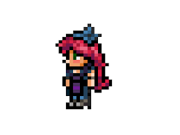

-La estilista
La estilista es un NPC que te puede cambiar el color de cabello, el estilo y vender tintes de pelo que aplican efectos dinámicos.
Para tenerla debes ir a una Nido de arañas donde estará amarrada con telarañas, si no aparece sigue merodeando por esa zona y revisar hasta que aparezca. Si tienes una casa habitable y disponible ella se irá a vivir ahí.
La estilista |
 |
Estadisticas |
Tipo |
NPC |
Salud |
250 |
Arma |
Tijeras estilosas |
Defensa |
15 |
Especialidad |
Vender tintes de pelo, cambiar el estilo y color de pelo
|
Bestiario |
Descripcion |
La estilista ama el estilo, el chisme y el cabello. Aparte de su poder de hacer un cambio de imagen milagroso, ella vende algunos productos para el cabello también. |
Bioma preferido |
Oceano |
Deja |
Tijeras estilosas |
12.5% |
IDs internas |
ID de bestiario |
354 |
ID de NPC |
10 |
Frases
- ¿Sólo un poco de arriba? Eso no es divertido..
- ¿Té? ¿Café? ¿O acaso otro zumo de naranja?
- Muy bien, te sientas y te relajas, volveré a lavar tu color en 25 minutos...
- Hoy no te has molestado ni en peinarte. ¿verdad?
- ¡Esas mechas resaltan el color de tus ojos!
- Una vez, intente utilizar uno de los productos del Mercader de Tintes. Las puntas acabaron quemadas. Un Desastre.
- O tienes estilo o te consigo uno.
- No tengo problemas en limpiarte las orejas y las cejas, pero dibujo la línea en el pelo de la nariz.
- Siéntate un segundo, que voy a por una maquinilla.
- ¿Corto por detrás y por los lados?
- A ti creo que podríamos hacerte... un pequeño mantenimiento.
- Oh, pobre... Ven... Ven a sentarte aquí. Todo irá bien. Shhhh.
- No se puede hacer nada con la cabeza de (Nombre del Demoledor). Es una causa perdida.
- ¡Espero de que te guste lo que he hecho con el pelo de (Nombre de la Chica fiestera)!
- Me ha contado (Nombre de la Chica fiestera) que (Nombre de la Enfermera), la amiga de (Nombre de la Mecánica), se pulió todo el sueldo de su novio en zapatos.
- Tengo las manos todas pegajosas de tanta... cera.
- Una vez, le puse una peluca a (Nombre del Ciborg) para poder arreglarle el pelo. ¡Creo que le gustó!
- Le ofrecí a (Nombre del Tabernero) un corte gratis, pero me lo rechazó. Jo, ¡al menos podría haberle retocado el bigotillo!
Al desatarla:
- Te hubiera dado un corte gratis si no te hubieras tardado tanto.
- ¡No vayas explorando con tijeras, decían, no quedaras atrapada en una telaraña decían!
- Gracias, uhn. Ahora puedo arreglar mi cabello.
- ¡Ew, mi cabello, hay telaraña por todas partes!
En Luna de Sangre:
- La propina es opcional, pero recuerda de que tengo unas tijeras y tu cabeza.
- ¿Sabias que esta guillotina se usaba para cortar cabezas?
- Mejor quédate lejos de mi pelo esta noche, jun. Acabo de afilar mis tijeras, y estoy buscando una excusa para usarlas.
Si el jugador es hombre:
- ¿Que loción de afeitado te puedo ofrecer hoy?
- Muy buenas, Soy (Su Nombre) y me encargaré de tu pelo hoy.
Si el jugador es mujer:
- ¡Nenaaa! ¡Eres mi chisme favorito!
- Así que un corte pixie... ¿Quieres unas patillas también?
- Muñeca, tenemos que arreglar esas puntas abiertas.
Cuando hay Fiesta:
- Puede que me haya arreglado el cabello solo por hoy, pero honestamente, sólo quería hacer estallar globos con mi escándalo.
Tienda
| Objeto |
Precio |
Disponibilidad |
| Quitatintes |
2  |
Siempre disponible |
| Tinte de las profundidades |
5 |
Siempre disponible |
| Tinta vital |
5 |
Tener los 400 de Vida |
| Tinte de maná |
5 |
Tener los 200 de Maná |
| Tinte de tiempo |
5 |
Sólo en Luna Llena |
| Tinte de biomedio |
5 |
Estar en Modo difícil |
| Tinte festivo |
7 50  |
Tener a la Chica fiestera |
| Tinte arcoíris |
15 |
Matar a los 3 Jefes mecánicos |
| Tinte de velocidad |
5 |
Matar a un Jefe Mecánico |
| Tinte de dinero |
10 |
Tener 1  en el inventario en el inventario |
| Tinte de equipo |
5 |
Estar en un equipo multijugador |
Tinte de pelo marciano   |
30 |
Después de derrotar Locura marciana |
| Tinte de pelo de crepúsculo |
30 |
Después de derrotar Locura marciana |
volver al inicio
volver a la pagina NPC